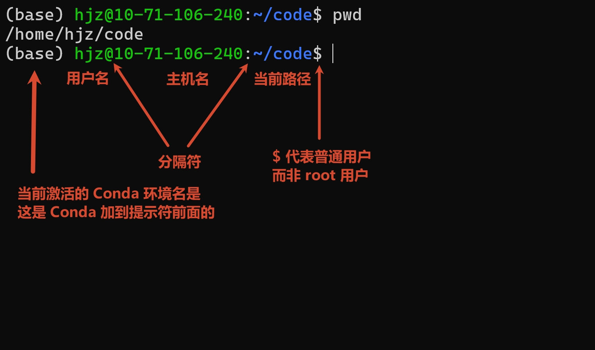

终端和 Shell 基础
Note
本文整理自浙江大学竺可桢学院 2023 年秋冬学期“实用技能拾遗”第一讲《Shell 基础及 CLI 工具推荐

为什么需要学习命令行
在图形化桌面中，我们习惯用鼠标双击文件、打开应用、复制和移动文件，这种交互方式称为图形用户界面（Graphical User Interface，GUI

VT100 图片来源：Gorthmog，CC BY-SA 4.0，Wikimedia Commons。

即使是在现代计算机中，掌握命令行也十分有助于我们方便、高效地执行各种操作：
- 管理文件，包括搜索、移动、复制、编辑文件，以及从网络上下载文件；
- 编译程序；
- 处理文本，完成增删改查；
- 把经常重复的步骤组织成自动化流程；
- 通过 SSH 登录没有图形桌面的远程服务器。
作为一个 CS 人，终端可以说是我们日常必不可少的一部分。
如果你在开发环境安装与第一次编译运行中选择了用 VS Code 编辑代码、用 GCC 编译代码，那么你应该已经体验过终端交互。假设当前目录中有一个 a.c 文件：
在终端中可以查看源码、编译并运行：
这里有三个命令：cat 查看源文件 a.c 的内容；gcc 将源文件编译为可执行文件；./a 运行得到的程序。
Terminal 和 Shell 的区别
一言以蔽之：Terminal（终端）提供文字交互界面，而 Shell 负责解释命令。
Terminal 一词原有“终点”的含义。Online Etymology Dictionary 记载，其“用于与计算机通信的设备”这一意义最早见于 1954 年。早期终端是连接计算机的实体设备，通常具有键盘和显示装置，可输入数据、运行程序并观察结果。
今天电脑里的终端通常指 Terminal Emulator（终端模拟器）：一个负责显示文本、处理键盘输入并管理交互界面的应用。它可以承载一个 Shell，让我们看到命令提示符和程序输出。

现代操作系统中基本都自带了终端：
- Windows 11 用户可以使用微软提供的 Windows Terminal；Windows 10 可以在微软应用商店下载；
- Linux 桌面常见的选择有 GNOME Terminal、Konsole、LXTerminal；
- macOS 自带 Terminal.app，也可安装 iTerm2。
至于 Shell ，可以理解为用户与操作系统之间的一层命令解释界面。我们在终端中输入指令后，终端负责把输入交给 Shell；Shell 分析命令、查找要执行的程序，配合操作系统启动程序，随后终端显示它的输出。交互流程大概如下：
常见 Shell 包括：
- Windows：
cmd.exe、Windows PowerShell 5，以及新版跨平台的 PowerShell 7（pwsh） 。 - Unix/Linux/macOS
： sh（Bourne Shell） 、 bash（Bourne Again Shell） 、 zsh（Z Shell） 、 fish（Friendly Interactive Shell） 。 Bash 广泛应用于 Linux，Zsh 自 macOS Catalina 开始成为 macOS 默认交互 Shell。
Note
大部分 Shell 的部分语法看起来相似，但并不完全相同。实际输入命令或编写脚本时，应当先确认自己正在使用哪一种 Shell。
Tip
如果使用 Zsh，可以试试 Oh My Zsh，这个工具为 Zsh 提供主题与插件配置框架，使自定义提示符和功能扩展更加方便。配置可以参考 Tonycrane 的 Shell 笔记。
Tip
如果你使用 PowerShell，建议将 Windows 自带的 Windows PowerShell 5 升级至 PowerShell 7，参见安装指南。还可以搭配 Oh My Posh 使用。
Shell 操作基础
这里以 Bash 为例进行介绍。Bash 免费、应用广泛，也是许多 Linux 系统的默认 Shell。
命令提示符与工作目录
打开终端并启动 Bash 后，通常会出现一行等待输入的文字，称为 Prompt（命令提示符

对于初学者，最需要关注的是当前的目录，或者说工作目录（Working Directory
例如，在不清楚所在目录时输入 rm -rf ./*，可能删除当前目录下全部文件：rm 代表删除（remove）-r 表示递归，-f 表示强制，./* 指向当前目录中匹配到的项目。这个例子是危险操作，切勿复制执行 :-)。
输入 pwd 可以查询当前目录。
在 Linux/macOS 中，所有文件最终都组织在以 / 为根的目录树下。路径中的 / 是分隔符，个人主目录可以简写为 ~。而 Windows 常见 C:\、D:\ 等盘符，并通常使用反斜杠 \ 分隔目录。由于路径系统不同，刚开始接触 Linux 的同学可能会问「为什么没有 C 盘
路径、相对路径与绝对路径
pwd 的全名是 print working directory；cd 是 change directory，用于进入另一个目录。路径既可以从根目录 / 开始写成绝对路径，也可以从当前目录出发写成相对路径。下面是几个特殊的标记：
| 记号 | 含义 |
|---|---|
/ |
类 Unix 文件系统的根目录 |
~ |
当前用户主目录 |
. |
当前目录 |
.. |
上一级目录 |
考虑两个例子。
例子 1：假设目前位于 /home/hjz/，希望进入 /usr/bin/：
两行是互相替代的两种写法。
例子 2：从 /usr/ 进入 /usr/games/：
cd 不带参数通常会返回个人目录。
文件与目录的创建、查看、复制和删除
Linux/Unix 系统通常使用 directory（目录）这一术语，相当于图形文件管理器中的 folder（文件夹） 。文件与目录操作主要涉及以下 bash 命令：
| 命令 | 用途与常用选项 |
|---|---|
ls |
列出当前目录内容；ls -a 同时显示隐藏文件；ls -l 显示权限、大小、时间等详细信息；也可组合为 ls -la |
touch file |
创建空文件；若文件已有内容，通常更新文件时间戳 |
mkdir dir |
创建目录 |
cp src dst |
复制文件；复制目录可用 cp -r src dst 递归进行 |
mv src dst |
移动或重命名文件、目录 |
rm files |
删除文件；-r 递归处理目录，-f 强制操作，慎用 |
find path -name 'pattern' |
在指定路径下按名称模式搜索文件和目录 |
建议大家自己尝试一下下面的例子：
find 的 *.txt 代表匹配任意以 .txt 结尾的文件，* 代表通配符。
Warning
不要轻易使用删除命令。系统中的 rm 不会把文件先放进回收站，rm 删掉的文件就是真没了。
查看文件内容
阅读日志、源代码、配置文件，或者查看二进制文件的内容，可以使用下列命令：
| 命令 | 作用与选项 |
|---|---|
cat file1 file2 ... |
将文件内容输出并依次拼接；cat -n file 显示行号 |
head file |
输出前 10 行；head -n N file 指定显示前 N 行 |
tail file |
输出后 10 行；tail -n N file 指定显示后 N 行 |
more file |
分页浏览内容 |
less file |
更灵活的分页浏览，可前后翻页、搜索等；详细选项用 less --help 查询 |
hexdump file |
按十六进制方式查看字节；-C 并排显示十六进制与 ASCII；-n N 只取前 N 字节 |
在more / less进入浏览内容时，还可以进一步操作：空格通常表示向下翻页，回车向下一行，q 退出；less 还可以用 /关键词 搜索。
对于很大的文件，用 tail 或 head 指令往往比一次性 cat 整个文件更好读。
其他基础命令
以下命令在日常使用中也很常见：
| 命令 | 基本用途 |
|---|---|
man |
查阅命令手册（manualman cat |
echo |
输出文本与变量值，经常与重定向、管道一起使用 |
whoami |
显示当前用户 |
whereis、which、whence |
查找命令及其位置；具体可用性依 Shell 和系统而定 |
clear |
清空终端当前显示内容 |
chmod |
修改文件访问权限 |
ps |
查看进程信息 |
date |
显示日期与时间 |
kill |
向进程发送信号，可用于请求进程终止 |
grep |
搜索文本中匹配指定模式的行 |
diff |
比较文件或目录之间的差异 |
curl |
发送网络请求，例如 HTTP 请求 |
wget |
下载网络资源 |
这些命令有各种参数，初学时不必全部背下来。例如，如果想了解 ls 的参数，可以运行 man ls：

重定向和管道
Shell 的一个强大之处是能够把不同程序连接起来。这里有三个常用的数据通道：
| 名称 | 简写 | 文件描述符 | 含义 |
|---|---|---|---|
| 标准输入 | stdin |
0 |
程序从哪里接收输入 |
| 标准输出 | stdout |
1 |
程序正常执行时输出内容到哪里 |
| 标准错误 | stderr |
2 |
程序把错误或诊断信息输出到哪里 |
在终端中，程序通常从键盘相关的输入端读取内容，将输出和错误显示在屏幕上。重定向（redirection）允许我们改变这些默认去向，例如把输出写入文件，或者让程序从文件读取输入。
bash 常见的重定向操作符如下：
| 写法 | 含义 |
|---|---|
command > file |
将标准输出写入文件；文件已有内容时通常覆盖 |
command >> file |
将标准输出追加到文件末尾 |
command < file |
让程序从指定文件读取标准输入 |
command 2> file |
将标准错误写入文件，2 即 stderr 的描述符 |
command &> file |
在 Bash/Zsh 中将标准输出和标准错误同时写入文件 |
示例：
管道（pipe）通过 | 连接命令：左边命令的标准输出成为右边命令的标准输入。
例子 1：
第一步输出日志；第二步筛选包含 ERROR 的行；第三步只保留最后十行。
例子 2：下面是一个稍复杂的例子：
这条命令中，cat 输出日志；cut -d ' ' -f 1 以单个空格为分隔符，取每一行的第一个字段；sort 按照字典序排列文本，让相同文本相邻；uniq -c 统计重复次数；sort -nr 按数值降序排列；最后，head -n 1 取出计数最大的一行。
Note
管道符 | 将前一个命令的标准输出作为输入流，传给后一个命令的标准输入，而不是作为后一个命令的参数。
例如，ls | cat 不能实现“输出当前目录中每个文件的内容”，它本质上等同于：

正确的操作是 cat `ls` 或者 ls | xargs cat。
除了 cat、grep、head、tail，适合处理文本流的工具还有 cut、sort、uniq、awk 等等，不再赘述。
遇到看不懂的长命令，可将其贴到 explainshell，逐段了解每个操作符和参数的用途。
环境变量、PATH 与配置文件
在 Linux 中，很多 Shell 命令最终会启动一个可执行文件。比如 ls 通常对应系统中某个位置的可执行程序，如 /bin/ls 或 /usr/bin/ls。可我们在终端里只输入 ls 就可以运行，为什么不需要先定位它的完整路径竟能运行？
关键在于 环境变量（environment variable），尤其是 PATH。环境变量是传递给程序的一组带名字的值，常用于描述系统环境、用户配置、搜索路径等信息。PATH 记录 Shell 搜索可执行程序时应当检查的目录列表。在 bash 中可以用下面的命令查看：
Shell 通过 PATH 搜索 ls 时，会在路径列表中寻找匹配的可执行程序。这个机制也解释了为什么本地编译产生的 a.out 需要写成 ./a.out：. 表示当前目录，而当前目录一般不在、也不应该随意添加到 PATH。
Windows 系统的原理相同。在 PowerShell 中，可以用下面的命令查看环境变量：
在 Bash（以及 Zsh 等 Shell）中，可以用 export 让变量进入后续启动的子进程环境；unset 则删除该变量。这样的修改不会永久保存，关闭 Shell 后重新打开一个独立会话，会恢复默认设置。
Bash 可以在启动时读取配置文件，自动设置环境变量、别名、提示符等内容，个人配置一般位于 ~/.bashrc。例如，需要设置一个长期使用的变量时，可以在这个文件中增加一行：
保存配置文件后重新打开 Shell，相关设置会在新会话中加载。如果希望当前会话立刻执行一个配置文件，可以运行：
source file 的作用是在当前 Shell 中执行指定文件里的命令。
在 Windows 系统中，可以通过在 PowerShell 中输入 echo $PROFILE 来定位配置文件。
最后还要说的是：Shell 还是一门可以编程的语言。当命令已经能够独立完成一个操作时，就可以进一步考虑：如何获取命令的返回值？怎样编写条件判断、循环、嵌套命令和函数？ 这些都属于 Shell 脚本编程的内容。它们能够把日常使用的一系列命令变成可重复执行的程序。
推荐继续阅读：
- MIT The Missing Semester：Shell Tools and Scripting
- Shell 教程 - 菜鸟教程
- 一些书：
- Blum, R. (2008). Linux command line and shell scripting bible. John Wiley & Sons.
- Robbins, A., & Beebe, N. H. (2005). Classic Shell Scripting: Hidden Commands that Unlock the Power of Unix. O'Reilly Media, Inc..
- Daniel J. Barrett (2022). Efficient Linux at the Command Line. O'Reilly Media, Inc.
值得尝试的 CLI 工具
熟悉 ls、cat、grep、find 以后，我们可能会希望获得更清晰的显示、更快捷的检索或更方便的目录跳转。对于编程、音视频和图像处理等复杂任务，我们也希望能有一些趁手的 CLI 工具。
开源社区围绕这些需求开发了不少工具，下面便是其中的一些代表，不一而足：
- bat 是增强版的
cat，能为代码添加语法高亮、行号和文件名。 - fd 是一个更易用的文件搜索工具，可作为
find的补充。 - eza 为
ls提供更丰富的目录列表显示。 - ripgrep 是一个高性能文本搜索工具，常用命令为
rg。例如，rg "TODO" .会在当前项目中查找包含TODO的文本。 - hexyl 是一个十六进制查看器，作用与
hexdump相近，但显示更直观。 - btop 是一个命令行资源监控工具，可以显示 CPU、内存、磁盘、网络与进程状态。
- neofetch 在终端中显示系统的 ASCII 图案，并列出操作系统、内核版本、开机时间等信息。该项目目前已停止活跃维护，选择同类工具时可以留意后续替代项目。
- cling 为 C++ 提供交互式解释执行环境，使用感受类似 Python 的 REPL，适合快速试验小段 C++ 代码。
- FFmpeg 提供强大的音频、视频与字幕处理功能，常用于格式转换、编解码、剪辑与批处理。
-
ImageMagick 是一个图片处理工具，可以转换格式、调整尺寸、裁剪和编辑图片。例如，把 JPG 转成 PNG 只需一行命令，非常方便：
-
tldr 可以视作
man的实用补充。man通常给出完整手册，tldr则提供简明说明与典型用例。